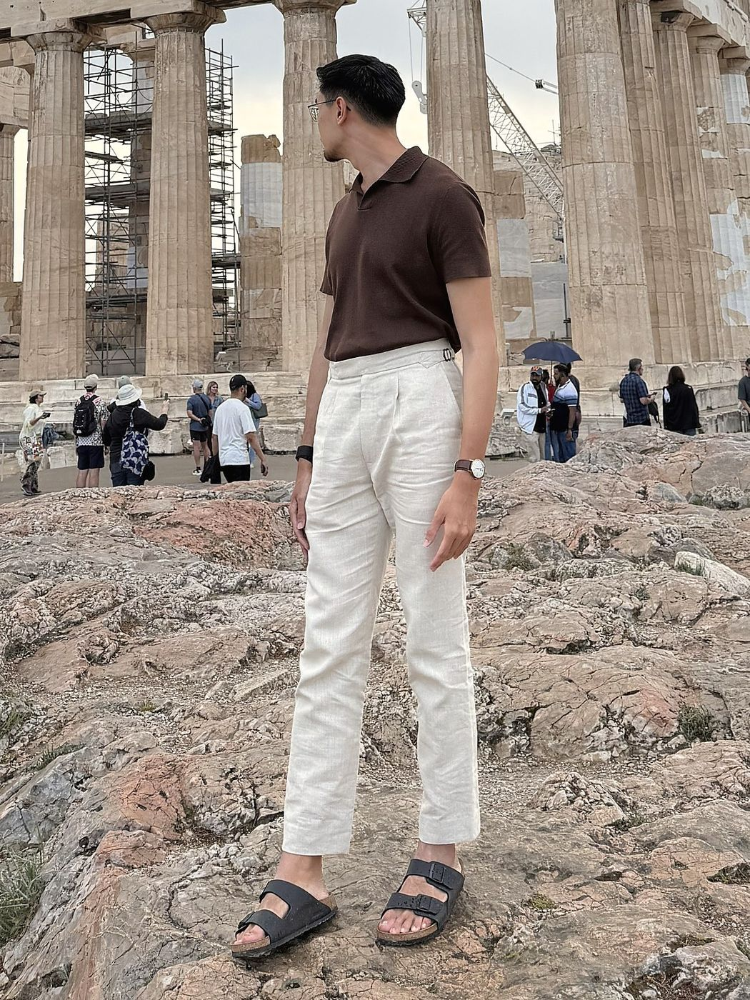
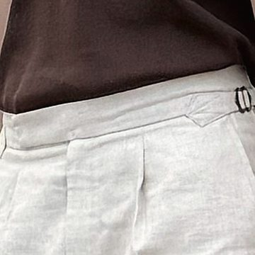
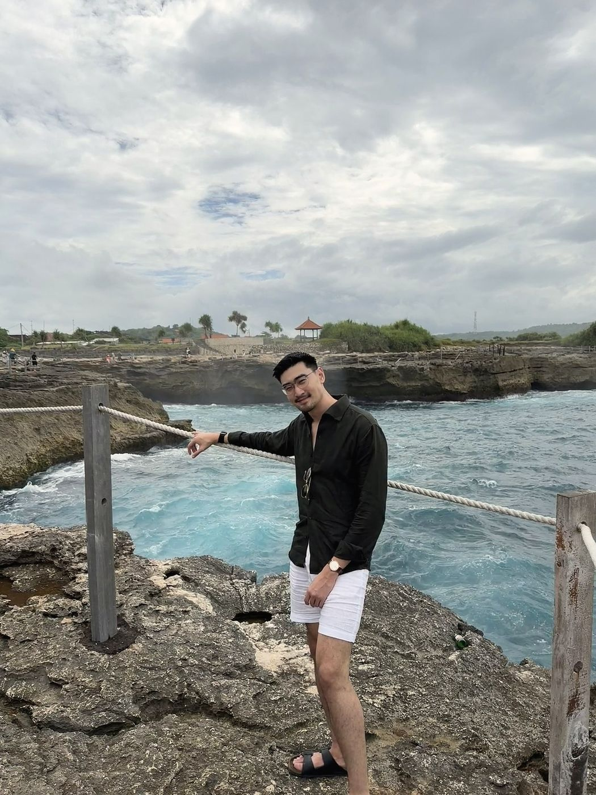
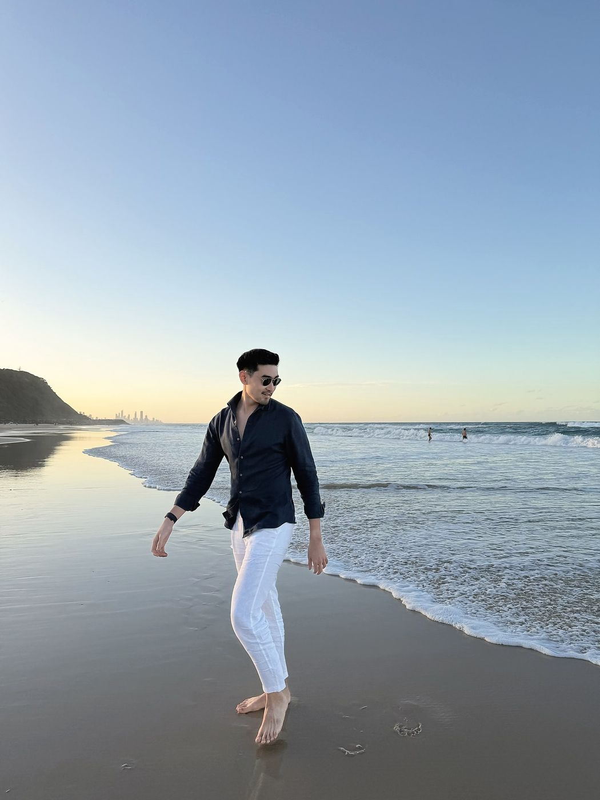

The outfitLight blue linen shirt, white linen trousers, brown sandals.
Worn forWeekends, travel and dinner by the water. Swap in loafers for a smart lunch.
Why it works at 31°COne breathable layer, light colours and a relaxed cut that never clings.
Look 02
Brown knit polo: the collar and the rise do the blazer's job

Knit collar that holds its shapeIt sits flat against the neck all day and frames the face like a lapel.
Mid-high rise with a pleatThe waistband sits just below the natural waist, high enough that the tuck survives sitting down.
A soft break at the hemThe trouser rests lightly on the foot, a relaxed finish that suits sandals.
Sleeve at mid-bicepShort enough to stay cool, long enough to look finished.
Side adjusters, no beltA cleaner waist with less bulk and less heat.
Fine-gauge knit

Side adjuster and pleat
12345
Knit collar that holds its shapeIt sits flat against the neck all day and frames the face like a lapel.
Mid-high rise with a pleatThe waistband sits just below the natural waist, high enough that the tuck survives sitting down.
A soft break at the hemThe trouser rests lightly on the foot, a relaxed finish that suits sandals.
Sleeve at mid-bicepShort enough to stay cool, long enough to look finished.
Side adjusters, no beltA cleaner waist with less bulk and less heat.
Fine-gauge knitSide adjuster and pleat
The outfitBrown knit polo, cream mid-high-rise pleated trousers, black sandals.
Worn forSmart casual days and long walks in the sun. Add suede loafers for the office.
Why it works at 31°CCollar and texture add polish in a single layer, and the mid-high rise keeps the look clean all day.
Exhibit 1Office dayBlack knit polo tucked into brown mid-high-rise trousers, dark loafers.Wear it in Singapore for: client meetings and office days.Exhibit 2Afternoon in an old townTaupe knit polo, white linen trousers, crossbody bag.Wear it in Singapore for: weekend lunch in Tiong Bahru.Exhibit 3Midday heatWhite linen shirt with the sleeves rolled, navy shorts, brown sandals.Wear it in Singapore for: Sunday brunch or a day on Sentosa.

Exhibit 4Windy coastlineOlive green cotton shirt with the sleeves rolled, white shorts, black sandals.Wear it in Singapore for: a Saturday brunch at Dempsey Hill.Exhibit 5Stone lanes in the afternoonBlue and white striped linen shirt with a band collar, white linen trousers, black sandals.Wear it in Singapore for: a Sunday walk past the shophouses of Joo Chiat.

Exhibit 6Golden hour by the seaNavy linen shirt, white linen trousers, no shoes needed.Wear it in Singapore for: a beach wedding or dinner at East Coast.
These fit one frame. Yours needs its own.
We build the same logic around your build, your week and your taste.